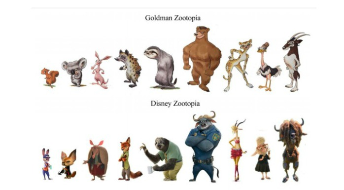

Este martes, el guionista Gary L. Goldman presentó una demanda contra el gigante del entretenimiento Walt Disney Pictures.
De acuerdo a la información entregada por Deadline, el escritor llegó hasta un tribunal federal de California (Estados Unidos) acusando a la empresa de violar los derechos de autor respecto a la idea de la exitosa película Zootopia.
Según explica Variey, Goldman alega que Disney tomó tanto el diseño de los personajes, así como los temas, las líneas de diálogo e incluso el nombre Zootopia de un proyecto que desarrolló por primera vez en el año 2000.
Agrega que en dos ocasiones llegó con este proyecto a los ejecutivos de la empresa (en 2000 y 2009), y que su propuesta fue rechazada.
Disney, por su lado, rechazó tajantemente las declaraciones del guionista. “La demanda de Goldman está plagada de falsas acusaciones”, aseguró la compañía, agregando que el escritor intenta reclamar el éxito de una película que no creó. “Vamos a defender vigorosamente eso en la corte”, concluyó Disney.
La versión de Goldman, no obstante, se apoya no solo en documentos sino que también en imágenes, mostrando los dibujos de los personajes que él creó versus los que se ven en la cinta, ganadora del Oscar a mejor película animada este año.
Además de los premios, la cinta recaudó US$ 1.023 millones en la taquilla mundial.